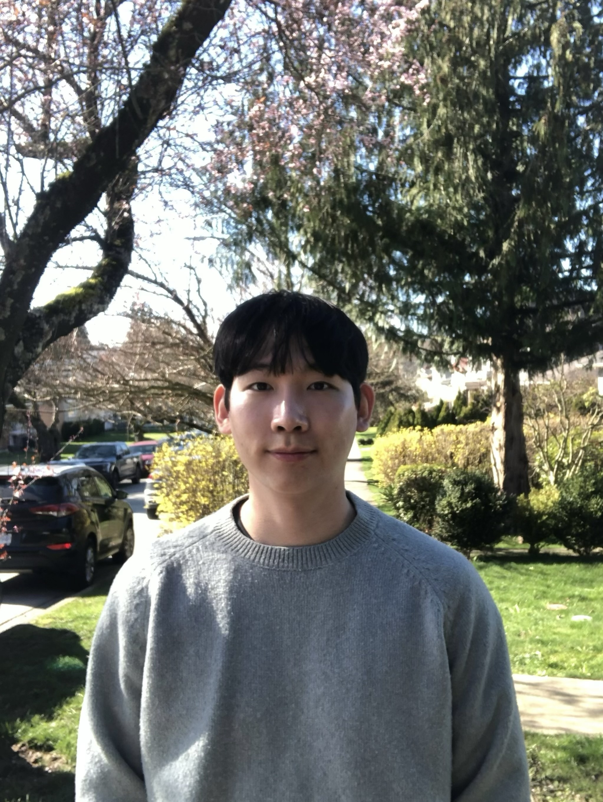

CS student at Simon Fraser University building toward Cloud Engineer, DevOps, and SRE roles — with Cloud Security as a long-term direction. I build real infrastructure, document everything, and layer in security thinking from day one.

Three main infrastructure projects — each with a security layer built in. Currently in execution.
7 repos tied to the execution plan. Main projects target full documentation; supporting repos track learning and scripts.
5 phases · 3 main projects · 3 certifications · DS&A track
Phases indicate sequence. Progress updated as each phase completes.
Click any topic to see notes with links. Counts update as notes are added. Notes live wherever you write them — Medium, GitHub, Notion — and are linked here.
I'm a third-year Software Systems (CS) student at Simon Fraser University, graduating in 2027. I'm building toward Cloud Engineer, DevOps, and SRE roles — with Cloud Security as a long-term direction.
Security is a core part of how I think about infrastructure, not an afterthought. Every project I build includes IAM design, logging, hardening, or detection — built in from the start, not added later. My goal is to be an engineer who understands what they're building well enough to defend it.
Right now I'm working through a structured build plan: Linux ops hardening → SIEM and detection with Wazuh → AWS infrastructure with Terraform → CI/CD automation. Every project ships with a README, runbook, and troubleshooting notes. If I can't explain it clearly, I go back and fix it.
Cert track: Google Cybersecurity Certificate → Security+ → AWS Solutions Architect Associate. I write on Medium when something is worth documenting beyond the repo.
Looking for co-op and internship opportunities starting Winter 2027 (January). Based in Vancouver, BC — open to remote, on-site, or relocation anywhere.